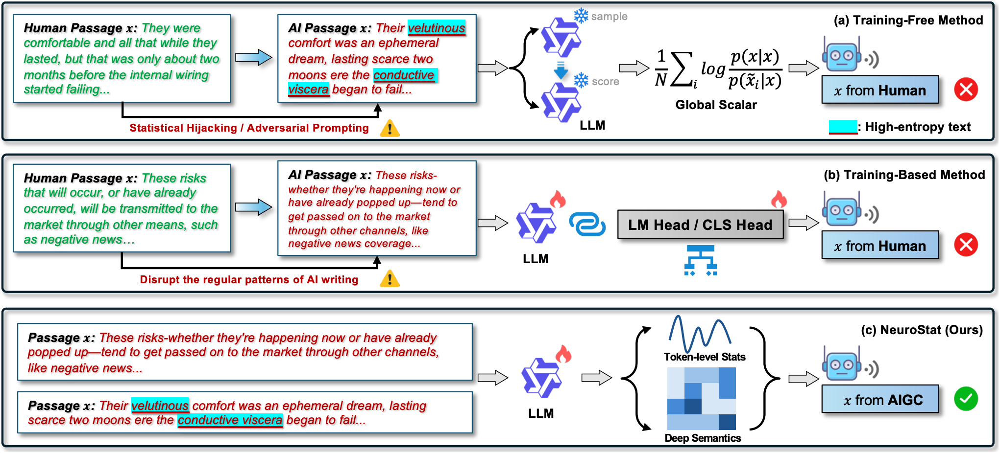
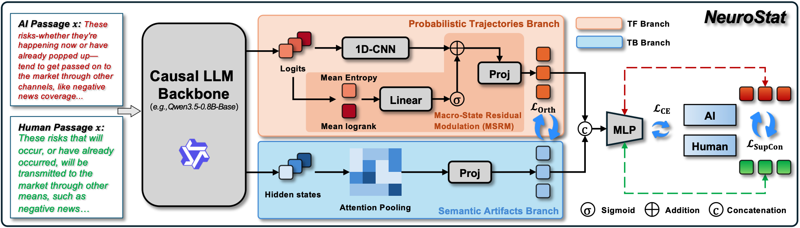
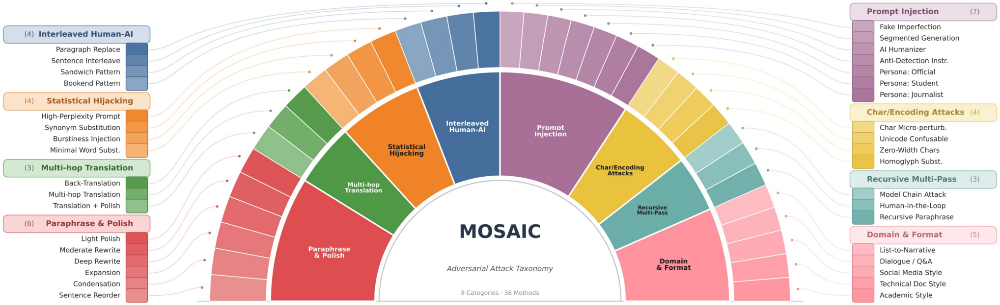

The rapid advancement of large language models has made machine-generated text detection critically important. Existing approaches largely fall into two disjoint paradigms: training-free methods that rely on global statistical scalars (e.g. perplexity), and training-based methods that leverage semantic hidden states. Both exhibit clear vulnerabilities under adversarial conditions — global scalars are a lossy compression that masks local probability burstiness in interleaved text, while purely semantic models tend to over-fit spurious "fingerprints" and are easily fooled by evasion attacks.
To expose these failure modes, we introduce MOSAIC, a comprehensive adversarial benchmark of 16,000 samples spanning the full spectrum of attack granularities. To address the underlying issues, we propose NeuroStat, a framework that bridges the gap between statistics and semantics by jointly capturing uncompressed token-level probabilistic logits and deep semantic hidden states from a single causal-LM backbone. These heterogeneous signals are fused via Macro-State Residual Modulation, which uses global uncertainty indicators to adaptively calibrate local convolutional features, while an orthogonal loss and a contrastive loss ensure the learned representations remain complementary.
Extensive experiments show that NeuroStat maintains remarkable robustness on the MOSAIC benchmark, in contrast to the severe performance degradation of state-of-the-art methods under adversarial conditions, establishing a new standard for adversarial text detection.
🎯 Key Idea: Don't throw away the token-level signal — let a lightweight CNN learn from the full log-probability curve, and use global uncertainty statistics only to modulate, not replace, that fine-grained evidence.

Figure 1. Motivation of NeuroStat. Collapsing the per-token log-probability curve into a few global scalars discards fine-grained statistical patterns that adversarial rewriting attacks specifically target, while ignoring the curve altogether sacrifices deep semantic evidence. NeuroStat keeps both signals from a single backbone pass.
Scoring-based AIGC detectors probe a text with a language model and reduce the resulting per-token probability sequence into global summary statistics for classification. This compression is efficient but brittle: adversarial rewriting operations — paraphrasing, cross-lingual round-tripping, character-level perturbation — are designed to shift these global scalars just enough to evade detection, while leaving detectable local irregularities in the raw token-level curve.
NeuroStat is built around a simple principle: keep the uncompressed token-level signal, and let a lightweight model learn discriminative local patterns directly from it, while still leveraging global uncertainty statistics — not to replace the local signal, but to adaptively modulate it.

Figure 2. Overview of the NeuroStat pipeline. A single causal-LM
backbone produces next-token logits and last-layer hidden states in one forward pass.
The TF branch encodes the per-token log-probability curve with a 1D-CNN,
residually modulated by global uncertainty indicators (mean entropy, mean log-rank) via
Macro-State Residual Modulation. The TB branch
attention-pools the semantic hidden states. The fused representation
[ztf ; ztb] is classified by an MLP head, jointly
trained with cross-entropy, supervised contrastive, and orthogonal-penalty losses.
L = LCE + λsupcon · LSupCon + λorth · LOrth
Processes the uncompressed per-token log-probability curve with a 1D-CNN instead of collapsing it into global scalars.
A residual sigmoid gate driven by global uncertainty statistics (mean entropy, mean log-rank) adaptively recalibrates the token-level CNN feature map.
Attention-pools the last-layer hidden states of the same backbone, capturing high-level semantic cues purely statistical signals miss.
A supervised contrastive loss shapes the fused embedding space, while an explicit orthogonal penalty keeps the TF and TB branches non-redundant.
An 8-category adversarial benchmark released with this repository for stress-testing detectors beyond standard in-domain evaluation.
Both branches are extracted from one causal-LM forward pass — no external scoring model or separate embedding model required.

Figure 3. MOSAIC comprises 16,000 samples spanning eight adversarial attack themes across the full spectrum of attack granularities, designed to evaluate AIGC text detectors beyond standard in-domain settings.
Each file follows the MIRAGE pair format
({"original": ..., "rewritten": ...}), so any detector — not just
NeuroStat — can be evaluated against it. See the
README for evaluation instructions.
NeuroStat is evaluated with standard binary-detection metrics computed over
human-written (original) versus machine-generated (rewritten)
text pairs: AUROC, AUPR,
Matthews Correlation Coefficient (MCC),
Balanced Accuracy, and TPR at FPR = 5%.
The evaluation script reports metrics both at a fixed decision threshold and at the
empirically best threshold, together with raw per-sample scores for downstream analysis.
@misc{li2026globalscalarssynergizingtokenlevel,
title={Beyond Global Scalars: Synergizing Token-Level Statistics and Deep Semantics for Adversarial AIGC Text Detection},
author={Peiming Li and Yifan Wang and Zhiyuan Hu and Shiyu Li and Zheng Wei and Yang Tang},
year={2026},
eprint={2608.28009},
archivePrefix={arXiv},
primaryClass={cs.CL},
url={https://arxiv.org/abs/2608.28009},
}
}